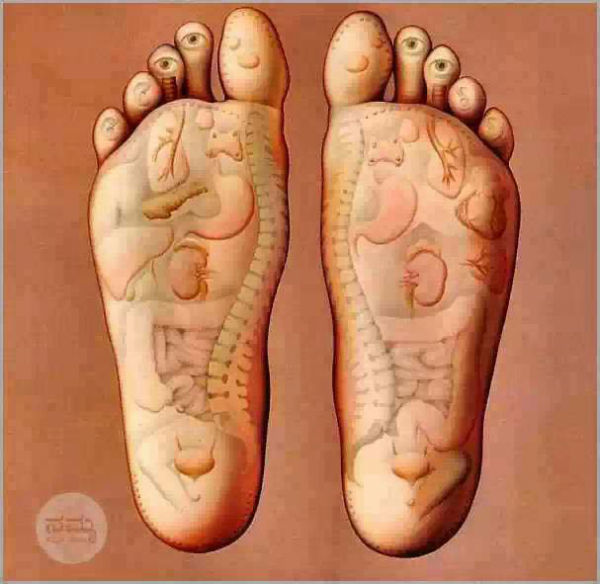

It is possible, you relate closely with one or more below and you decide to join a forward looking group of people, a global community of excited beings
Good karma, good seeds, for next-gen, touch lives,.... however you view it, if you have a reason, be the guest. If you find something not there, inform here to add
Change someone's life
Many a times, just intentional guidance is all it needs to help someone... Connect here and be the guest and host here
Are you looking for some help?
If you ask, someone may be willing to help. Be clear on what you ask and be genuine and convincing enough.
Give back to community
Fix an issue in your community to make it easier for yourself and your folks. Leave a community that's fit for your next generations. Join here to contribute in your own possible way to commonly known issues. Do you have ideas? Do you see issues that need to be fixed? Do you need help to put together pieces of research and expertise to work with civic leaders? Join others here
Contribute to a Cause
Here is a list of Causes you can contribute to. This is guaranteed to give you satisfaction and leave a mark that will last for generations to come. If you don't see a cause you care deeply, add it here for others to get involved.
Build a business
Business is an asset which you can pass on to your next generation. You cannot pass on your employment or knowledge, so your efforts and time are only brining in 1x result. However, a business lasting for generations is bringing in multiple-x return of your time and efforts. Here is a list of ideas to join hands with others and build a business safely when you are still employed. Together can do more than alone. If you have an idea, add here for others to get involved.
Hire genuine skills
Here is a list of candidates with proof of expertise. Refer them or hire them based on your position. Give a ladder to talent and hardwork. These people need a breakthrough. If you reskilled yourself or coached someone else to reskill for a better future add here with proof of expertise for recruiters to find you. As an example, a school or college drop out working in underpaying jobs due to circumstances could learn a skill valuable for employers. Go for it. Read some success stories here
Now Hiring Volunteers and Advisory members
Refer here for available positions for this community website, a point of inflection, a source of strength, a place of joy and happiness and a treasure of knowledge and expressions. You are ideal if you want to build a community, contribute to society, have fun working with some new people across the globe in building something with your skills that interests you. Apply here
HAPPY HOLIDAYS
Wish You Merry Christmas and Happy Holidays.
Be blessed.
THE UNCOMMON PERSONS
It is a pleasure to know about some people with uncommon impact on others.
Read about them, be inspired. Try to be like them, be blessed. If you know anyone like them, invite them here with their picture and story.
TECHNOLOGY REVIEWS
Technology is essential part of life. You can find information that you can apply in your job and in your life here
Image
Do you want to improve your investment, business or performance through technology? This is the place.
You could be investor, business manager, technology professional or just a curious George... you would enjoy this information
UNDERSTAND THIS WORLD
From the treasure of ancient knowledge and from modern thinkers, you can apply this knowledge in your everyday life.
There are billions of people who already experienced this world and written about it. The younger ones could gain from this knowledge...
Having right information is like riding on a booster engine. It just speeds up everything in the right direction. Ignoring it is like taking a slow bus or even a long walk.
UNDERSTAND YOURSELF
If I understand myself, I position myself for success.

Do you start with the question 'Who am I beyond my name and title', and wade off from it?
Or thought a little bit about 'How my body and mind works? How this miracle called life works' and didn't find time to go further down that route? Here you may get some opportunities to think inwards deeply.
UNDERSTAND GOD
Whether Atheist or Theist, can you define the reason for orderliness? Join here
Image
If you see the same thing happening repeatedly and consistently, or if you see uniformity and meticulous design, you have reason enough to believe someone is behind it... or not. Involve here
How does the school bus come around the same time every day and don't come on weekends? How there is striking uniformity and regularity in what we see around us? How a plant on earth relies on Sun that's millions of miles away and Sun sends the same rays everytime?
UNDERSTAND MONEY
Do you want to know more about Money? Or share something with others?
Image
Involve here.If you want something, best way to get it is by learning more about it...
You may be surprised, how many layers of complexities money has and it is not the same as what you see as a coin or a paper note.